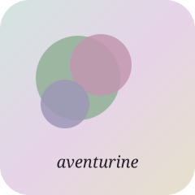

I make things across screens — movement, play, image, sound — and the joy of making them is the whole point.
I'm a full-time creator working in digital mixed media. Workout videos edited like music videos. A weekly gaming stream and a weekly art stream. Experimental shorts when the mood takes me. Music, eventually, woven through all of it.
The register swings — playful, earnest, a little cryptic, sometimes dark — and the swing is the personality. Soft surface, intense substance. My community, the Lil Big Bang Group, is a warm place to land: trans- and neurodivergent-affirming by design, chaos kept to the aesthetic and never the experience.
Right now this is a doorway, not a house. Prints, high-quality video downloads, and commissions will find their home here in time. For now — come wander, come watch, come make noise in the group.